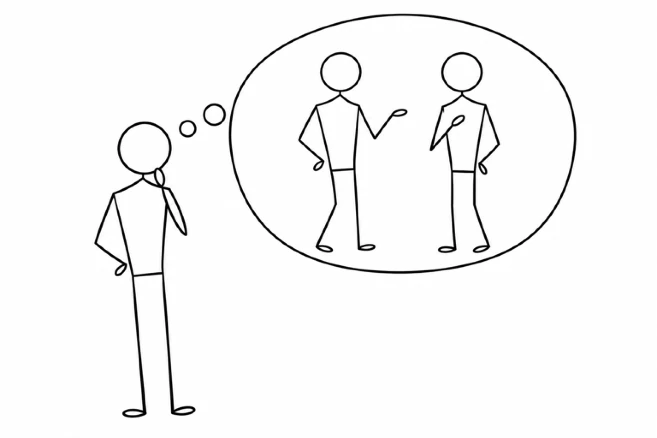
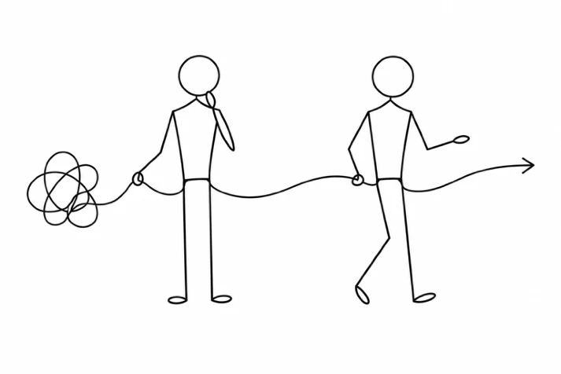
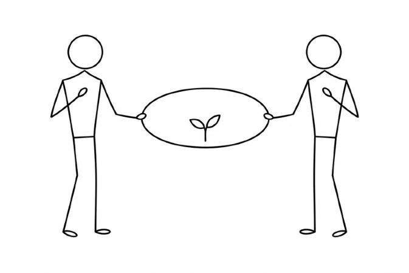
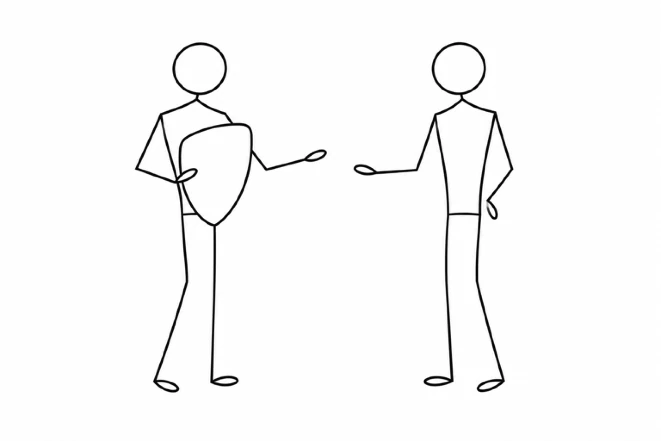
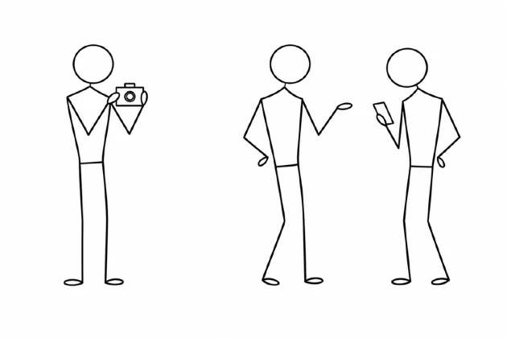
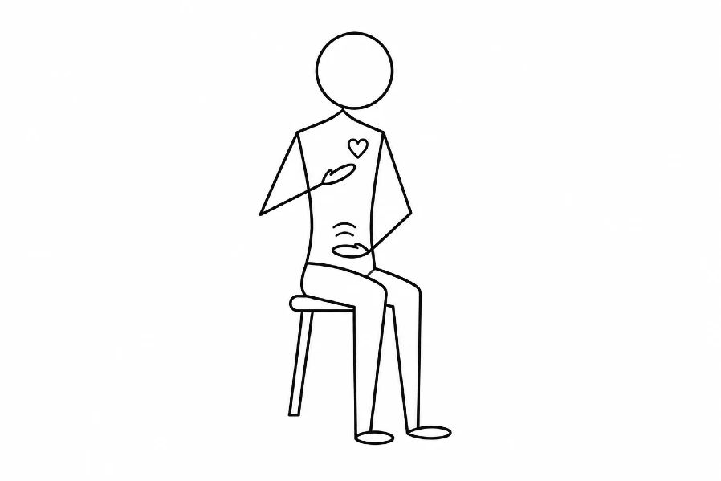
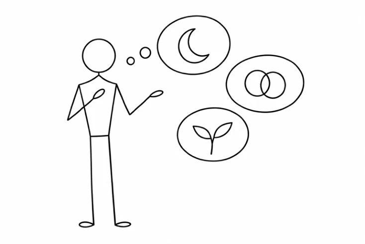
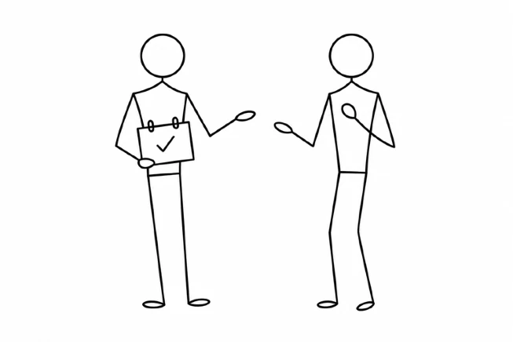

ANTES DE EMPEZAR
Una escena para explorar
Elige una situación reciente que quieras comprender mejor. Vuelve a esa misma escena a lo largo del recorrido para observar qué descubres en cada paso.
Puedes seguir esta guía durante el taller o retomarla después. Escribe en tu libreta o en tus notas personales. Tú decides qué compartir.

Un momento para ti
- ¿Qué ocurrió y con quién?
- ¿Qué me gustaría comprender o cambiar en esta situación?
Para empezar, una escena cotidiana y de intensidad manejable suele dar espacio para explorar.
COMPRENDER LO QUE NOS PASA
Anatomía del conflicto
A menudo vivimos el conflicto antes de poder explicarlo. El cuerpo se tensa, interpretamos lo que ocurre y respondemos desde formas de protegernos que hemos aprendido. Poner palabras a esa experiencia nos ayuda a reconocerla y a elegir cómo queremos continuar.
Por qué y para qué
El porqué busca una explicación y, a veces, una justificación. El para qué abre una dirección que puede convertirse en un plan. Comprender lo que me ha pasado y aclarar qué quiero hacer ahora me permite entrar en la conversación con una intención más consciente.
El porqué da voz a lo que me ha dolido.
El para qué orienta lo que quiero hacer posible.

Para tu escena
- ¿Qué explica mi reacción?
- ¿Para qué quiero conversar y qué me gustaría hacer posible?
Tú y yo somos tres
En una conversación estamos tú, yo y la relación que construimos entre ambos. Cada persona trae su historia, sus necesidades y sus expectativas. Entre los dos se va formando una manera de escucharse, de acercarse y también de defenderse.
Mirar la relación como un tercer elemento permite preguntarnos qué estamos creando con nuestras respuestas y cómo queremos seguir relacionándonos. También pueden influir otras personas, alianzas u obligaciones.

Para mirar la relación
- ¿Qué es importante para mí?
- ¿Qué imagino que es importante para la otra persona?
- ¿Qué necesitaría preguntarle para comprobarlo?
- ¿Qué está pasando entre nosotros y qué otras influencias reconozco?
- ¿Qué quiero cuidar o cambiar en esta relación?
Cómo he aprendido a protegerme
Hemos aprendido formas de protegernos en el contacto con los demás. Pueden ser útiles en ciertos momentos y limitarnos cuando se vuelven automáticas. Reconocerlas abre la posibilidad de elegir.

- Introyección
- Tomo como propias normas o ideas sin revisar si encajan conmigo. «Siempre hay que ceder para ser buena persona».
- Proyección
- Atribuyo a otra persona algo de mi experiencia que me cuesta reconocer como propio. Puedo explorar cuánto de lo que le atribuyo tiene que ver conmigo.
- Retroflexión
- Dirijo hacia mí un impulso que iba hacia fuera. Quiero expresar enfado, pero me contengo y aprieto la mandíbula.
- Confluencia
- Me cuesta distinguir dónde termino yo y dónde empieza la otra persona.
- Deflexión
- Desvío el contacto con lo que me afecta. A veces bromeo o cambio de tema cuando la conversación se vuelve incómoda.
Para reconocer tu manera de protegerte
- ¿Qué suelo hacer cuando aparece un conflicto?
- ¿Qué consigo con esa respuesta y qué me cuesta?
UNA MANERA DE HABLAR Y ESCUCHAR
La comunicación no violenta
La comunicación no violenta (CNV), desarrollada por Marshall B. Rosenberg, propone una manera de hablar y escuchar que pone en el centro lo que sentimos y necesitamos. Su propósito es favorecer la comprensión entre las personas para que podamos abordar los conflictos con honestidad y cuidado.
Se apoya en cuatro componentes: observación, sentimientos, necesidades y peticiones. Primero describimos lo que ocurre distinguiendo los hechos de nuestras interpretaciones. Después reconocemos cómo nos sentimos y qué necesitamos. Finalmente formulamos una petición concreta que permita a la otra persona responder libremente y explorar otras posibilidades.
La escucha empática ocupa un lugar central. Consiste en interesarnos por cómo vive la situación la otra persona y comprobar qué hemos comprendido. Podemos expresar desacuerdos y poner límites mientras escuchamos su experiencia.
El tiburón y el oso panda
En el taller usamos estas dos imágenes para reconocer maneras de comunicarnos. El modo tiburón aparece cuando atacamos, juzgamos o exigimos. El modo oso panda nos recuerda la posibilidad de hacer una pausa, reconocer lo que necesitamos y expresarlo con claridad.
Son modos que podemos reconocer en nosotros. El oso panda también puede decir que no y expresar un límite con firmeza.
PASO 01 · OBSERVACIÓN
Observo lo que ocurre
Observar es describir un hecho concreto. Sitúo cuándo ocurrió y qué se dijo o hizo. Distingo lo que recuerdo de la interpretación que hago de ello.

Un juicio
«Nunca me escuchas».
Generaliza lo que ocurre.
Una observación
«Has mirado el móvil tres veces mientras yo hablaba».
Describe una situación concreta.
Vuelve a tu escena
- ¿Cómo recuerdo lo que ocurrió?
- ¿Qué me digo sobre esa escena?
- ¿Qué hechos puedo describir con más precisión?
Prueba ahora. Escribe una frase que empiece por «Cuando…» y describa lo que se dijo o hizo. Si falta un dato, deja espacio para preguntarlo.
Ver el vídeo de observación Dani Muxi · YouTube ↗ Siguiente · Escucho lo que siento →PASO 02 · SENTIMIENTOS
Escucho lo que siento
Al recordar una situación, puedo notar qué ocurre en mi cuerpo. Describo esa sensación con mis palabras y exploro qué emoción aparece.

Una interpretación
«Siento que no te importo».
Expresa una idea sobre la otra persona.
Una emoción
«Siento tristeza».
Nombra lo que reconozco en mí.
Escucha también el cuerpo
- ¿En qué parte de mi cuerpo noto el malestar y cómo es esa sensación?
- ¿Qué emoción reconozco ahora? ¿Cómo podría explicarla?
- ¿Qué me ayudaría a darme una pausa antes de responder?
Prueba ahora. Dedica unos instantes a notar el cuerpo. Describe lo que aparece con tus palabras y busca una emoción que reconozcas. También puedes dejarlo abierto si todavía no sabes nombrarla.
Cada persona vive y describe sus sensaciones de una manera propia.
Ver el vídeo de sentimientos Dani Muxi · YouTube ↗ Siguiente · Reconozco lo que necesito →PASO 03 · NECESIDADES
Reconozco lo que necesito
Las necesidades expresan lo que sostiene nuestro bienestar, como escucha, autonomía, descanso o claridad. Una misma necesidad puede atenderse de distintas maneras.
Detrás de «necesito que guardes el móvil» puede haber una necesidad de escucha. Guardar el móvil es una estrategia posible para atenderla.

Una estrategia
«Quiero que guardes el móvil».
Una acción concreta que propongo.
Una necesidad
«Necesito escucha».
Lo que quiero cuidar con esa acción.
Busca lo que importa
- ¿Qué es importante para mí en esta situación?
- ¿Qué necesidad reconozco detrás de mi malestar?
- ¿De qué otras maneras podría atenderla?
Prueba ahora. Escribe una necesidad en el centro de una hoja. Alrededor, anota distintas formas de atenderla: algo que puedas hacer por ti, una ayuda que puedas pedir o un acuerdo que puedas proponer.
Ver el vídeo de necesidades Dani Muxi · YouTube ↗ Siguiente · Formulo una petición →PASO 04 · PETICIONES
Formulo una petición
Una petición propone una acción concreta y posible. Expreso qué me gustaría y cuándo. Dejo espacio para un sí o un no. Si recibo un no, puedo escuchar qué lo hace difícil y explorar otra opción.

«¿Te va bien que hablemos diez minutos hoy a las siete, dejando los móviles aparte?»
La pauta SMART
Podemos usar esta pauta para revisar si nuestra petición es comprensible y realizable.
- S Específica
- Describe una acción concreta que la otra persona pueda entender.
- M Medible
- Permite comprobar si se ha realizado lo acordado.
- A Alcanzable
- Es posible con el tiempo y los recursos disponibles.
- R Relevante
- Está relacionada con la necesidad que queremos atender.
- T Temporal
- Define un momento o un plazo.
Abre una posibilidad
- ¿Qué acción concreta quiero proponer y en qué momento?
- Si recibo un no, ¿qué me gustaría comprender antes de responder?
- ¿Qué otra propuesta podría cuidar nuestras necesidades?
Prueba ahora. Formula tu petición y léela en voz alta. Comprueba si se entiende qué pides y si estás dispuesto a escuchar una respuesta distinta de la que esperas.
Ver el vídeo de peticiones Dani Muxi · YouTube ↗ Siguiente · Reúno lo que he descubierto →VOLVER A TU ESCENA
Reúno lo que he descubierto
Los cuatro pasos pueden ayudarte a aclarar lo que quieres decir. Usa tus propias palabras y deja tiempo para escuchar la respuesta.
- Cuando observo… describo el hecho concreto.
- Me siento… nombro mi experiencia emocional.
- Porque necesito… reconozco qué me importa.
- ¿Te parece…? propongo una acción que pueda responderse libremente.
Ver un ejemplo completo
«Cuando has mirado el móvil tres veces mientras te contaba lo que me había pasado, me he sentido triste, porque para mí era importante tener un rato de escucha. ¿Te va bien que hablemos diez minutos hoy a las siete, dejando los móviles aparte?»
Es un ejemplo para explorar. Busca una forma de decirlo que suene tuya.
Lo que me llevo
- ¿Qué he comprendido sobre mí?
- ¿Qué paso concreto quiero practicar esta semana?
- ¿Qué me ayudará a recordarlo?
DESPUÉS DEL TALLER
Siete prácticas para seguir
Una propuesta para llevar el recorrido a la vida cotidiana. Puedes dedicar unos minutos a cada práctica y volver a las que te ayuden. El ritmo lo eliges tú.
Día 1Mi intención al conversar
Elige una escena cotidiana. Escribe qué quieres comprender y para qué te gustaría conversar. Busca algo que quieras hacer posible.
Volver al porqué y al para qué ↑Día 2Los hechos y mi relato
Escribe lo que ocurrió y, al lado, lo que interpretaste. Revisa si has atribuido alguna intención que todavía tendrías que comprobar.
Volver a la observación ↑Día 3Una pausa para sentir
Antes de responder en una conversación, dedica unos instantes a notar el cuerpo. Describe la sensación y explora qué emoción puedes reconocer.
Volver a los sentimientos ↑Día 4Lo que necesito cuidar
Cuando aparezca malestar, pregúntate qué es importante para ti. Nombra una necesidad y busca dos maneras distintas de atenderla.
Volver a las necesidades ↑Día 5Comprobar antes de suponer
Piensa qué imaginas que necesita la otra persona. Déjalo como una hipótesis y formula una pregunta abierta que te permita conocer su experiencia.
Volver a tú y yo somos tres ↑Día 6Una petición concreta
Convierte un «me gustaría que las cosas fueran distintas» en una acción concreta. Propón cuándo podría ocurrir y escucha qué respuesta recibe tu petición.
Volver a las peticiones ↑Día 7Qué quiero seguir practicando
Revisa la semana. ¿Qué cambió en alguna conversación? ¿Dónde te costó más? Elige un gesto o una frase que quieras seguir practicando.
Volver a la síntesis ↑Las marcas se guardan solo en este navegador. Tus reflexiones quedan en las notas que tú elijas.
PARA VOLVER Y PROFUNDIZAR
Libros y vídeos
Lecturas del taller
- Marshall B. Rosenberg
Comunicación no violenta. Un lenguaje de vida. 3.ª edición ampliada. Editorial Acanto, 2016. - Francisco Peñarrubia
Terapia Gestalt. La vía del vacío fértil. Alianza Editorial, 2008.
Ver y escuchar
Marshall RosenbergConferencia sobre comunicación no violenta, subtitulada en españolYouTube ↗Los cuatro vídeos de Dani Muxi trabajan los componentes de la CNV con escenas de películas redobladas.
Los enlaces de vídeo se abren en YouTube.
SEGUIR EXPLORANDO
Próximos talleres
La culpa que me cuesta soltar
Dejar de cargar con todo
A veces nos sentimos responsables de todo y seguimos dándole vueltas a lo que hicimos o dejamos de hacer. En este taller exploraremos qué nos corresponde, qué podemos reparar y qué necesitamos soltar para seguir adelante sin castigarnos.
Quiero más informaciónQuiero hacerlo, pero algo me frena
Miedo, bloqueos y autoexigencia
Queremos cambiar algo, pero cuando llega el momento aparecen las dudas, el miedo o la exigencia de hacerlo perfecto. Exploraremos qué nos frena y qué intentamos proteger para encontrar pequeños pasos que podamos dar.
Quiero más informaciónDecir que no sin sentirme mal
Límites y relaciones
A veces decimos que sí para evitar una incomodidad y después nos quedamos con el malestar. En este taller practicaremos cómo reconocer nuestras necesidades, expresar nuestros límites y sostener un no mientras cuidamos nuestras relaciones y nuestro propio espacio.
Quiero más información